低成本扩展
无需大量昂贵机器人本体，可在工厂、家庭、商超、物流场景并行部署。
行业瓶颈
模型能力快速提升，但真实操作中的动作轨迹、视觉观测、手物关系、任务语义和时间同步数据仍极度稀缺。无本体采集为机器人提供规模化的人类操作先验。
无需大量昂贵机器人本体，可在工厂、家庭、商超、物流场景并行部署。
采集真实人类操作与环境交互，补足仿真合成数据的 Sim2Real Gap。
交付的不只是视频，而是含视觉、动作、语义、质量记录的数据资产。
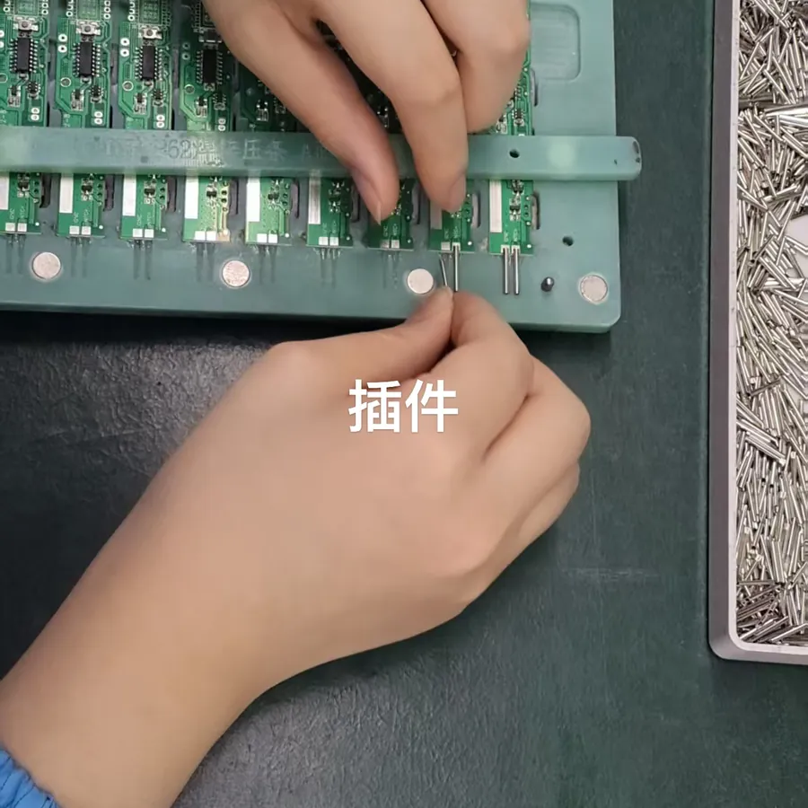
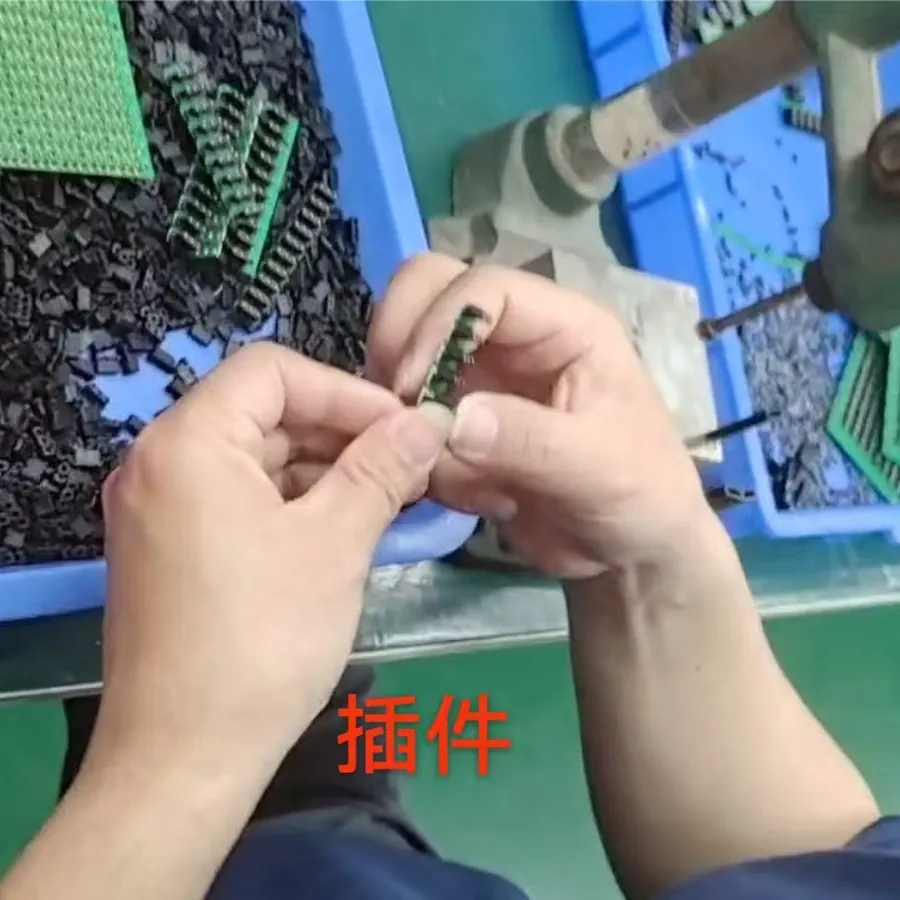
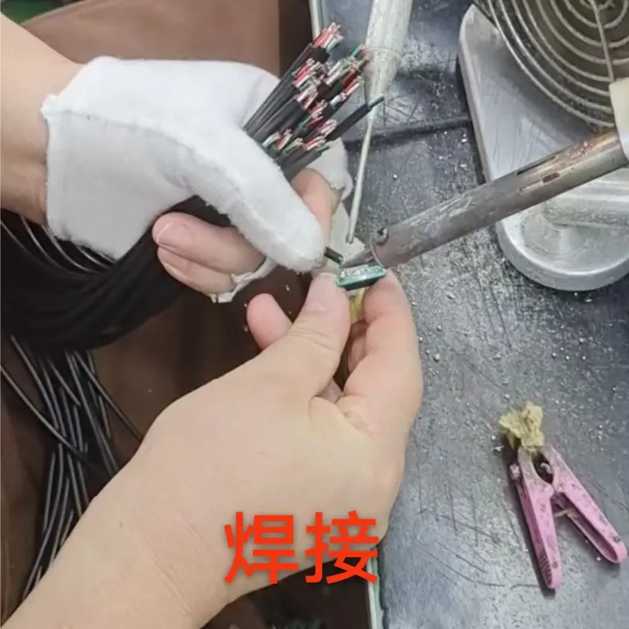
公司方案
长辰迅采围绕真实场景、穿戴采集、多设备时间同步、精细标注、质控审核和数据集封装，服务机器人厂商、具身大模型公司与科研机构。
How It Works
工厂、家庭、商超、餐饮、物流等真实任务场景标准化。
第一视角眼镜、动捕、数据手套、VR/AR 设备采集人类操作。
多机位、多传感器统一时间戳，生成可训练时序数据。
动作分段、物体属性、任务语义、成功失败与异常片段记录。
按主流 VLA 训练格式或客户 Schema 打包、验收与增量更新。
场景网络
公司拥有稳定的工厂合作渠道和项目协同能力，可按客户需求快速链接和复制采集场景。
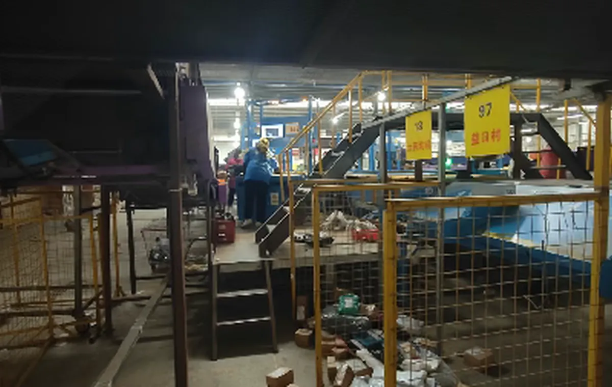
电子装配、线束插拔、分拣、包装、焊接、质检、柔性物体操作。
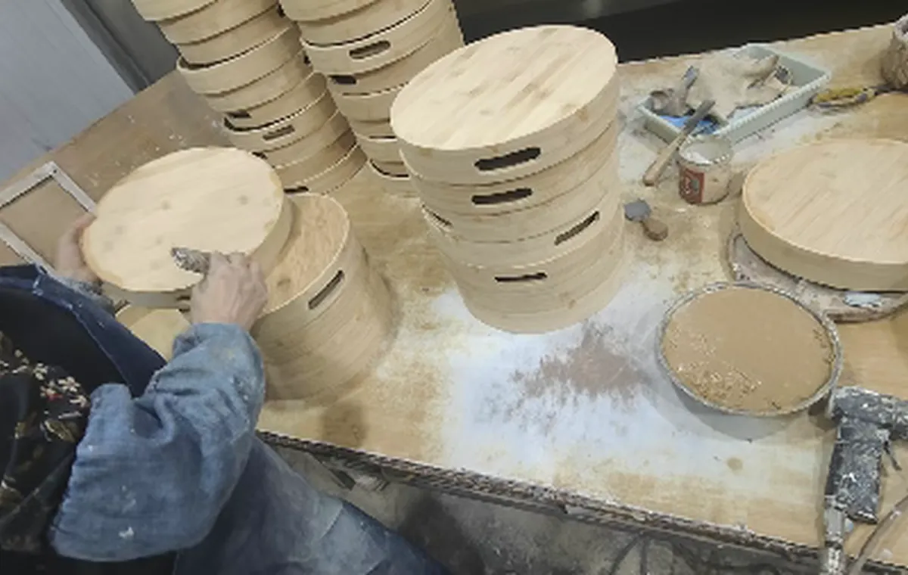
竹木加工、石艺雕刻、手工涂色、折叠、整理等高价值长尾操作。
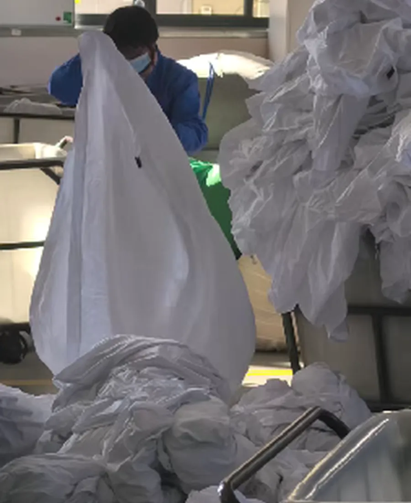
洗衣厂、商超、餐饮、仓储、酒店、医养等服务机器人过渡场景。
项目样本
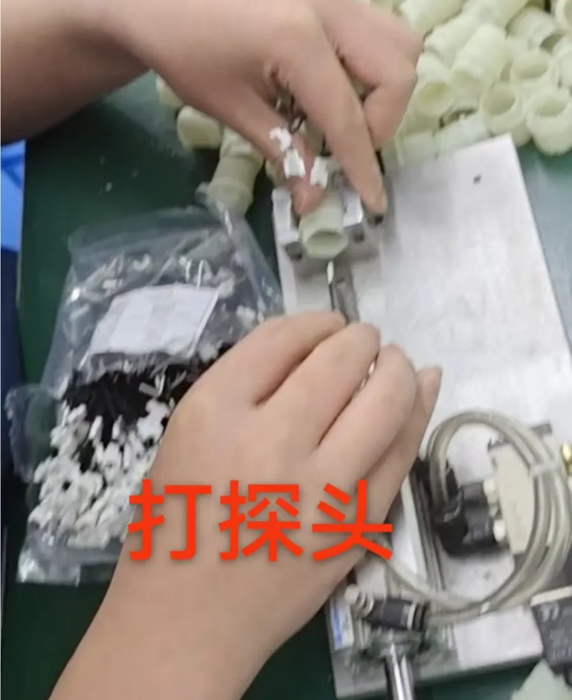
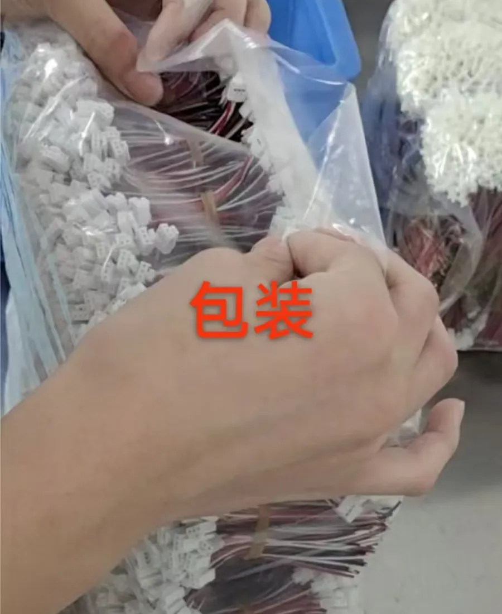
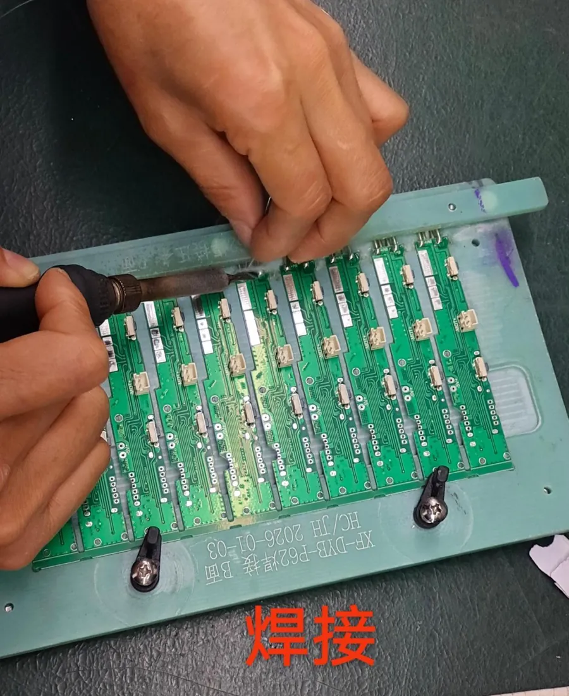
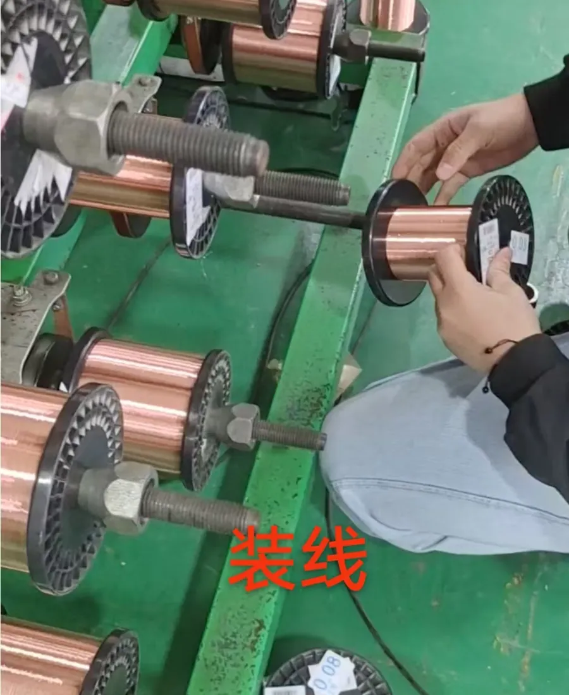
交付标准
数据字段覆盖 RGB 视频、帧 ID、相机参数、手部轨迹、关键点、动作阶段、接触状态、物体类别、自然语言指令、异常片段与质检记录。
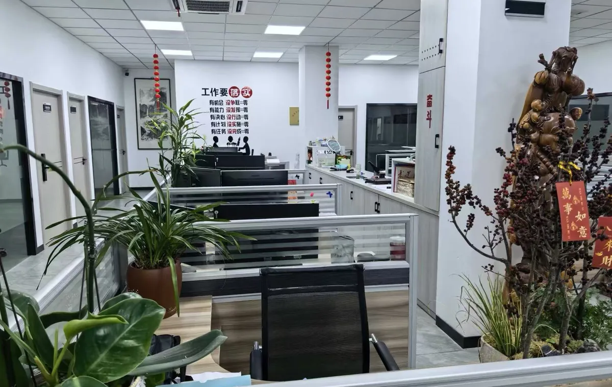
核心优势
合作共建
长辰迅采期待与机器人企业、具身大模型团队、科研机构、场景方和地方产业伙伴，共建工业、家庭、商业三类标杆数据集。